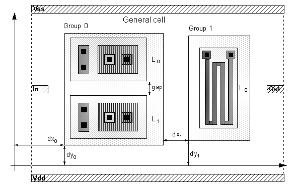

Using the Genetic Algorithm for Placement in Leaf Cells
Dilvan de Abreu Moreira
Correspondence to:
Email: dilvan@lcaee.fee.unicamp.br
Phone: (+55 192) 397680 ext:298
Fax: (+55 192) 391395 att: Dilvan-DSIF
Les T. Walczowski

Electronics Engineering Laboratories
The University, Canterbury - Kent
CT2 7NT - United Kingdom
Email: ltw@ukc.ac.uk
ABSTRACT
The genetic algorithm mimics natural evolution to solve problems in a wide variety of domains. It is particularly suitable for solving complex, search intensive, optimization problems, like the placement of component cells of a leaf cell. It has been used in the placement server of a distributed leaf cell generator, it can place CMOS, BICMOS, bipolar and mixed analogue/digital cells. Because the genetic algorithm does not make assumptions or impose restrictions upon the type of layout or circuit being optimized, it can place unusual layouts and work with a richer set of layout options.
1 Introduction
In nature, individuals best suited to competition for scanty resources survive. Evolving to keep adapted to a changing environment is essential for the members of any species. Although evolution manifests itself as changes in the species' features, it is in the species' genetical material that those changes are controlled and stored. The force working for evolution's success is the genetic algorithm. It solves the problem of producing species able to thrive in a particular environment [1].
The genetic algorithm, first proposed by Holland in 1975 [2], mimics natural evolution to solve problems in a wide variety of domains [3]. It is particularly suitable for solving complex, search intensive, optimization problems, like the placement of component cells in a leaf cell. Leaf cells are subcircuits of a complexity comparable with SSI (Small Scale Integration) components such as one-bit adders, flip-flops or multiplexers, that form circuit libraries.
2 The algorithm
The genetic algorithm is formed by a set of individual elements (the population) and a set of biological inspired operators, that can change these individuals. According to evolutionary theory, only the individuals that are the more suited in the population are likely to survive and to generate off-springs, thus transmitting their biological heredity to new generations.
In computing terms, the genetic algorithm maps strings of numbers to each potential solution. Each solution becomes an individual in the population, and each string becomes a representation of an individual. There should be a way to derive each individual from its string representation. The genetic algorithm then manipulates the most promising strings in its search for an improved solution.
The algorithm operates through a simple cycle, shown in figure 1. On each cycle, a new generation of possible solutions (individuals) for a given problem is produced. At the first stage, a population of possible solutions is created as a start point. Each individual in this population is encoded into a string (the chromosome) to be manipulated by the genetic operators. In the next stage, the individuals are evaluated, first the individual is created from its string description (its chromosome) and its performance in relation to a target response is evaluated. This determines how fit this individual is in relation to the others in the population. Based on each individual's fitness, a selection mechanism chooses the best pairs for the genetic manipulation process. The selection policy is responsible to assure the survival of the fittest individuals. Genetic operators are then used to produce new populations of individuals, the offspring, by manipulating the genetic information possessed by the pairs chosen to reproduce. This information is stored in the strings (chromosomes) that describe the individuals.
Figure 1: The "reproduction" cycle.
The two main genetic operators used are crossover and mutation. The offspring generated by this process take the place of the older population and the cycle is repeated until a desired level of fitness is attained or a determined number of cycles is reached.
Genetic operators
- Crossover is one of the genetic operators used to recombine the population genetic material. It takes two chromosomes and swaps part of their genetic information to produce new chromosomes. This operation is similar to sexual reproduction in nature. As figure 2 shows, after the crossover point has been randomly chosen, portions of the parent's chromosome (Parent 1 and Parent 2) are combined to produce the new offspring Son. The selection process associated with the recombination made by crossover assures that special genetic structures, called building blocks, are retained for future generations. These building blocks represent the most fit genetic structures in the population.
Figure 2: Crossover.
- Mutation is used because the recombination process alone cannot explore search space sections not represented in the population's genetic structures. This could make the search get stuck around local minima. The mutation operator introduces new genetic structures in the population by randomly changing some of its building blocks, helping the algorithm escape local minima traps. Since the modification is totally random and thus not related to any previous genetic structures present in the population, it creates different structures related to other sections of the search space. As shown in figure
3, mutation is implemented by occasionally altering a random part of a chromosome.

Figure 3: Mutation.
A number of other operators, other than crossover and mutation, have been introduced since the basic model was proposed. They are usually versions of the recombination and genetic alterations processes adapted to constraints of a particular problem.
Problem dependent parameters
This description of the genetic algorithms' computational model reviews the steps needed to create the algorithm. However, a real implementation takes account of a number of problem-dependent parameters:
- The choice of the underlying encoding of the individuals on the population is critical to the algorithm performance. It is desirable that the encoding makes the representation as robust as possible. This means that even if a piece of the representation is randomly changed, in the majority of cases, it should still represent a viable individual.
- The evaluation is a step closely related to the actual system the algorithm is trying to optmize. It takes the strings representing the individuals of the population and, from them, creates the actual individuals and test and score them. The testing depends on what characteristics should be optimized and the scoring depends on the relative importance of each different characteristic value obtained during testing
Other parameters to be adjusted are the population size, crossover and mutation rates, evaluation method, and convergence criteria.
3 The placement problem
The genetic algorithm is used, in the placement program of the Agents [4] system, to place groups of cells in a mask layout area forming a circuit cell. The inputs to the algorithm are an empty design area and a list holding the groups of cells to be placed. There are three kinds of groups of cells: arrays of MOSFETs, a list of bipolar transistors and individual general cells. The program generates some placed circuits that are then sent to the routing servers. The first placement successfully routed becomes the final circuit.
The algorithm works in the same way as described in the last section, which leaves the problem dependent parameters, encoding and evaluation, to be defined.
Encoding
In the coding used in this application, the chromosome is not represented by a string, as would be expected, but by a list. This is done to avoid Hamming cliffs [3] and to enhance robustness. The elements of this list represent each group being laid out in the cell, with the groups laid out in the same order as they appear in the list. For each group there is another list describing how that particular group should be laid out:
Chromosome: [ Group 0, Group 1, Group 2, ..., Group n]
Group: [Group number, Flip flag, [Line 0, Line 1, ..., Line n], Dx, Dy, Gap]
- Group number is the group's identification.
- Flip flag indicates if the group is to be mirrored in the Y axis.
- Line list is a list with the order that the lines in the group should be laid out.
- Dx represents the distance between this group and the last group laid out.
- Dy represents the distance between the group and the Y axis.
- Gap is the gap added to the minimum separation between a cell's transistors.
With the information provided by the chromosomes, the individual, shown in figure 4, can be laid out on a cell, in this case, containing only the pads (Vss, Vee, Input and Output).

Figure 4: Coding schema.
The way the encode is undertaken can affect the mutation and cross-over operations. Cross-over is carried out by swapping sets of elements in the lists (what is similar to swap parts of a string), and mutation is undertaken by changing randomly the composition of list elements, such as the Flip flag. Cross-over and mutation operations can generate illegal individuals. Illegal meaning placements that violate design rules. When evaluated they will be classified as "born dead" individuals and will not be added to the population list.
Evaluation
The new individuals created should be evaluated to find how good their placement is. The best way of doing the evaluation would be by actually routing each placement. Unfortunately the routing process is slow and would take too long to evaluate all candidates. In place of full routing a method is used to estimate the cost of wiring the circuit. It uses the same wiring algorithms, that a router uses, but it allows crossing over and short circuits to take place, and it does not test for design rule violations. As the evaluation pseudo routing takes place, the cost of the wires is being computed. At the end, the evaluation routine has the total cost of the pseudo routing and the total number of crossings.
After evaluation, each placement or "individual" has it fitness calculated from two values: the total wire cost and the number of crossings. The whole population of individuals is kept in a list, which is ordered by fitness, the fittest individuals coming first in the list. New individuals are continuously appended to the population list. When the population reaches a predetermined maximum number, half of it is killed.
The fitness of an individual, and thus its position in the population list, determines its probability of reproduction and death. As the position of an individual in the population list increases, its probability of reproduction decreases and its probability of death increases.
The algorithm implementation
Once encoding and evaluation are defined the actual algorithm implementation is basically that described earlier. The inputs for the program are an empty design and a list holding the groups of cells to be placed. The routine first generates four individuals, by placing the cells in them randomly. These individuals are then evaluated and classified and become the population.
The program then runs a certain number of generations or cycles (fig. 1). When it finishes it sends the placed circuit to be wired by a router. It continues to generate new placements of the same circuit until one of the routers manages to successful wire one of then. An example of a placed circuit is shown in figure 5.
Figure 5: A placed circuit.
4 Conclusion
The genetic algorithm is a very powerful and flexible optimization algorithm. Its use in the Agents system placer demonstrated that it can generate layout flexibly, as it can place CMOS, BICMOS and mixed analogue/digital leaf cells. Because the algorithm does not make assumptions or impose restrictions upon the type of layout or circuit being placed, it can place unusual layouts and work with a richer set of layout options.
5 Acknowledgments
The authors would like to acknowledge, the CNPq - National Council for Research an agency of the Brazilian Federal Government, for the financial support for this work.
6 References
- [1]
- C.T. Walbridge, "Genetic Algorithms: What Computers Can Learn from Darwin", Technology Review, January 1989, pp. 47-53.
- [2]
- J.H. Holland, Adaptation in Natural and Artificial Systems, Univ. of Michigan Press, Ann Arbor, Mich. 1975.
- [3]
- J.L. Ribeiro Filho, P.C. Treleaven and C. Alippi, "Genetic-Algorithm Programming Environments", Computer, vol. 27, no. 6, June 1994, pp. 28-43.
- [4]
- D.A. Moreira and L.T. Walczowski, "Automated Placement for a Leaf Cell Generator", ISCAS 94, Proc. of the IEEE Inter. Symposium on Circuits and Systems, June 1994, vol. 1, pp 117-120.